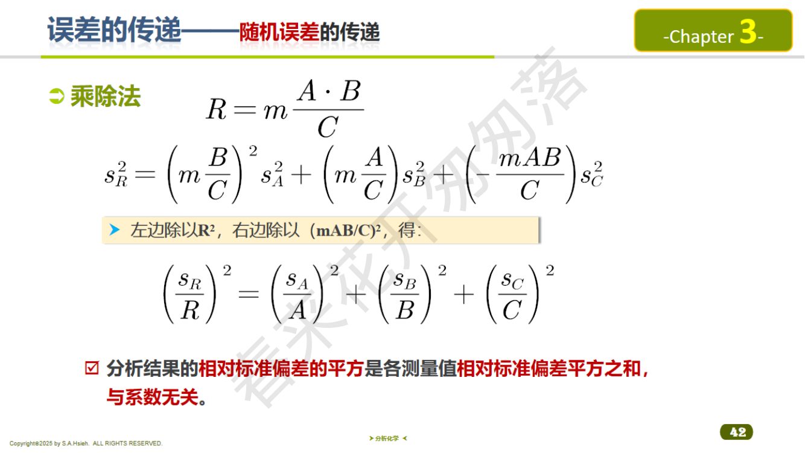
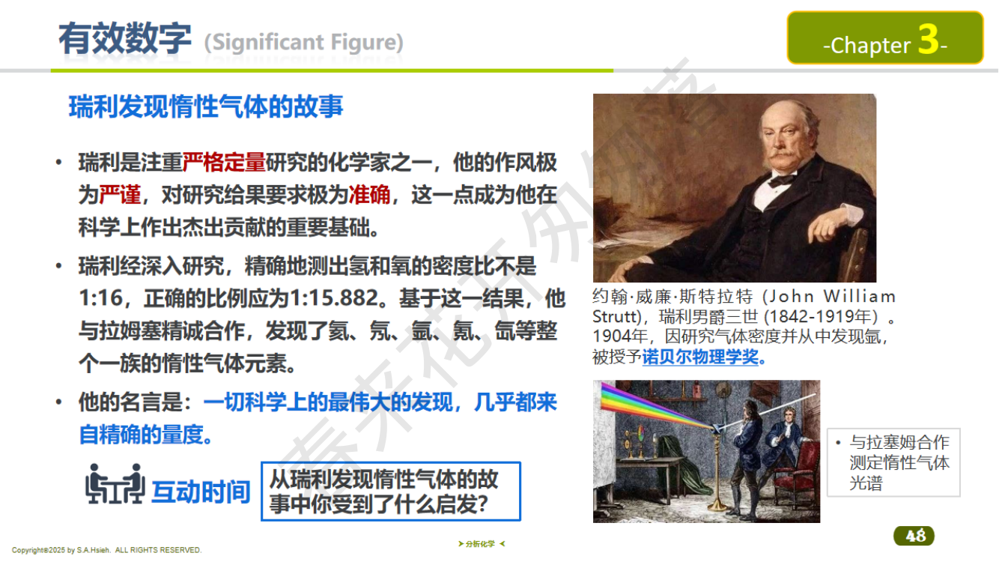

第三章 误差与分析数据处理（下）
3.7 显著性检验
显著性检验的基本思想
用统计方法判断分析结果之间或结果与真值之间的差异是由随机误差引起的，还是存在系统误差（即差异是否"显著"）。
检验步骤：
- 提出原假设 $H_0$（假设无显著差异）和备择假设 $H_1$
- 选择显著性水平 $\alpha$（通常 0.05）
- 计算检验统计量
- 查表得临界值，判断是否拒绝 $H_0$
重要：检验顺序！当同时需要比较两组数据的均值和精密度时，先做 F 检验（比较方差/精密度），再做 t 检验（比较均值）。因为 t 检验的公式取决于两组数据方差是否相等。
检验决策树：完整流程
- Step 1：Q 检验 / Grubbs 检验 —— 先剔除离群值
- Step 2：F 检验 —— 比较两组数据的精密度（方差）是否有显著差异
- Step 3：t 检验 —— 根据 F 检验结果选择合适的 t 检验公式
- 若 F 检验表明方差无显著差异 → 用合并标准偏差 $s_p$ 的公式
- 若 F 检验表明方差有显著差异 → 用 Welch t 检验（近似法）
u 检验（$\sigma$ 已知时）
当总体标准偏差 $\sigma$ 已知（如由大量历史数据积累）时，不需要 t 分布，直接用正态分布的 $u$ 统计量：
$$u_{\text{calc}} = \frac{|\bar{x} - \mu_0|}{\sigma / \sqrt{n}}$$
判断：若 $|u_{\text{calc}}| > u_{\alpha}$（查正态分布表），则拒绝 $H_0$，差异显著。
常用临界值：$u_{0.05} = 1.96$（双侧 95%），$u_{0.01} = 2.58$（双侧 99%）。
u 检验 vs t 检验：关键区别在于 $\sigma$ 是否已知。$\sigma$ 已知用 u 检验，$\sigma$ 未知（用 $s$ 代替）则用 t 检验。当 $n$ 很大（$n > 30$）时，$s \approx \sigma$，两种检验结果趋于一致。
例题（u 检验）：某炼铁厂铁水的碳含量服从正态分布，$\mu = 4.55\%$，$\sigma = 0.08\%$。某天测试 5 炉铁水，碳含量分别为 4.28%, 4.40%, 4.42%, 4.35%, 4.37%，试判断平均值有无变化？（$\alpha = 0.05$）
解答：
$\bar{x} = 4.36\%$，$H_0$：$\mu = \mu_0 = 4.55\%$
$$u_{\text{calc}} = \frac{|4.36 - 4.55|}{0.08/\sqrt{5}} = \frac{0.19}{0.0358} = 5.3$$
$|u_{\text{calc}}| = 5.3 > u_{0.05} = 1.96$，拒绝 $H_0$，碳含量平均值有显著变化。
t 检验一：样本均值与标准值（真值）的比较
$H_0$：$\bar{x}$ 与 $\mu_0$ 无显著差异
$$t_{\text{calc}} = \frac{|\bar{x} - \mu_0|}{s / \sqrt{n}}$$
自由度 $f = n - 1$
判断：若 $t_{\text{calc}} > t_{\alpha, f}$（查表），则拒绝 $H_0$，差异显著（存在系统误差）
若 $t_{\text{calc}} \le t_{\alpha, f}$，则不能拒绝 $H_0$，差异不显著
t 检验二：两组样本均值的比较
$H_0$：$\bar{x}_1$ 与 $\bar{x}_2$ 无显著差异
当 F 检验表明两组方差无显著差异时（合并标准偏差）：
$$s_p = \sqrt{\frac{(n_1-1)s_1^2 + (n_2-1)s_2^2}{n_1+n_2-2}}$$
$$t_{\text{calc}} = \frac{|\bar{x}_1 - \bar{x}_2|}{s_p\sqrt{\dfrac{1}{n_1}+\dfrac{1}{n_2}}}$$
自由度 $f = n_1 + n_2 - 2$
t 检验三：配对数据的显著性检验
当两种方法对同一组样品分别进行测定（不同方法、相同样品），所得的两组数据是"配对"的，不能当作独立样本处理。
方法：计算每对数据的差值 $d_i = x_{1i} - x_{2i}$，将问题转化为判断差值的总体均值是否为零。
$H_0$：两种方法无显著性差异（$\bar{d} = 0$）
计算步骤：
- 计算每对差值 $d_i = x_{1i} - x_{2i}$
- 计算差值的平均值 $\bar{d} = \dfrac{\sum d_i}{n}$
- 计算差值的标准偏差 $s_d = \sqrt{\dfrac{\sum(d_i - \bar{d})^2}{n-1}}$
- 计算 t 值：
$$t_{\text{calc}} = \frac{|\bar{d}|}{s_d / \sqrt{n}} = \frac{|\bar{d}|}{s_d} \cdot \sqrt{n}$$
自由度 $f = n - 1$（$n$ 为配对数）
判断：若 $t_{\text{calc}} > t_{\alpha, f}$，则拒绝 $H_0$，两种方法有显著差异。
配对 t 检验 vs 独立双样本 t 检验的区别：配对 t 检验用于"同一样品、不同方法"的情况；独立双样本 t 检验用于"同一方法（或不同方法）、不同样品"的情况。不要混淆！
2022 期末 Q6 考点：t 检验比较均值
题目要点：比较两组分析数据的均值是否有显著差异时，应使用 t 检验。
关键理解：
- t 检验比较的是均值，回答"两组数据的中心位置是否一致"
- F 检验比较的是方差（精密度），回答"两组数据的离散程度是否一致"
- 做两均值 t 检验之前，必须先做 F 检验判断方差是否齐性
F 检验（方差比检验）


PPT：F 检验例题

PPT：配对 t 检验
PPT: F检验 — 精密度比较
比较两组数据的精密度（方差）是否有显著差异。
$H_0$：两组数据精密度无显著差异（$\sigma_1^2 = \sigma_2^2$）
$$F_{\text{calc}} = \frac{s_1^2}{s_2^2} \quad (s_1 > s_2, \text{使} F \ge 1)$$
自由度：$f_1 = n_1 - 1$（大方差对应的自由度），$f_2 = n_2 - 1$
判断：若 $F_{\text{calc}} > F_{\alpha}(f_1, f_2)$（查 F 表），则拒绝 $H_0$，两组精密度有显著差异。
F 检验临界值表（$\alpha = 0.05$，部分常用值）
| $f_1 \backslash f_2$ | 2 | 3 | 4 | 5 | 6 | 7 | 8 |
|---|
| 2 | 19.00 | 9.55 | 6.94 | 5.79 | 5.14 | 4.74 | 4.46 |
| 3 | 19.16 | 9.28 | 6.59 | 5.41 | 4.76 | 4.35 | 4.07 |
| 4 | 19.25 | 9.12 | 6.39 | 5.19 | 4.53 | 4.12 | 3.84 |
| 5 | 19.30 | 9.01 | 6.26 | 5.05 | 4.39 | 3.97 | 3.69 |
| 6 | 19.33 | 8.94 | 6.16 | 4.95 | 4.28 | 3.87 | 3.58 |
注意：$f_1$ 是大方差对应的自由度（分子），$f_2$ 是小方差对应的自由度（分母）。查表时行列不能搞反！
F 检验：单尾检验与双尾检验
| 单尾检验（One-tailed） | 双尾检验（Two-tailed） |
|---|
| 假设 | $H_0$：$\sigma_1^2 \ge \sigma_2^2$（或 $\le$）
$H_1$：$\sigma_1^2 < \sigma_2^2$（有方向性） | $H_0$：$\sigma_1^2 = \sigma_2^2$
$H_1$：$\sigma_1^2 \ne \sigma_2^2$（无方向性） |
| F 计算 | $F = s_1^2 / s_2^2$（按假设方向排列） | $F = s_{\text{大}}^2 / s_{\text{小}}^2$（大方差在分子） |
| 判据 | $F > F_{\alpha}(f_1, f_2)$ 则拒绝 | $F > F_{\alpha/2}(f_1, f_2)$ 则拒绝 |
考试中一般使用双尾检验（因为通常不事先知道哪个方差大），且教材提供的 F 表多为单尾值。双尾检验时：若使用 $\alpha = 0.05$ 的双尾检验，应查 $\alpha = 0.025$ 的单尾 F 表；但分析化学教材中常简化为直接查 $F_{\alpha}$ 表，大方差放分子即可。
例题 4：用标准方法测定钢样中碳含量，5 次测定结果的均值为 $\bar{x} = 0.462\%$，$s = 0.0054\%$。已知钢样标准值为 $\mu_0 = 0.450\%$。在 95% 置信水平下，该方法是否存在系统误差？
解答：
$H_0$：$\bar{x}$ 与 $\mu_0$ 无显著差异
$$t_{\text{calc}} = \frac{|0.462 - 0.450|}{0.0054/\sqrt{5}} = \frac{0.012}{0.00241} = 4.97$$
查 t 表：$f = 4$，$\alpha = 0.05$，$t_{0.05,4} = 2.776$
因为 $t_{\text{calc}} = 4.97 > t_{0.05,4} = 2.776$，拒绝 $H_0$。
结论：在 95% 置信水平下，该方法存在显著的系统误差。
例题 5：甲乙两人分析同一试样，结果如下。在 95% 置信水平下，两人精密度是否有显著差异？
甲：$n_1 = 6$，$s_1 = 0.10\%$；乙：$n_2 = 5$，$s_2 = 0.05\%$
解答：
$$F_{\text{calc}} = \frac{s_1^2}{s_2^2} = \frac{(0.10)^2}{(0.05)^2} = \frac{0.010}{0.0025} = 4.00$$
自由度：$f_1 = 5$，$f_2 = 4$
查 F 表：$F_{0.05}(5, 4) = 6.26$
因为 $F_{\text{calc}} = 4.00 < F_{0.05}(5,4) = 6.26$，不能拒绝 $H_0$。
结论：在 95% 置信水平下，两人的精密度无显著差异。
例题 5b（F 检验 + t 检验联合）：甲乙两人分析同一试样：甲 $n_1=5$, $\bar{x}_1=25.30\%$, $s_1=0.12\%$；乙 $n_2=6$, $\bar{x}_2=25.10\%$, $s_2=0.10\%$。先做 F 检验再做 t 检验（$\alpha=0.05$）。
解答：
Step 1: F 检验
$$F_{\text{calc}} = \frac{s_1^2}{s_2^2} = \frac{(0.12)^2}{(0.10)^2} = \frac{0.0144}{0.0100} = 1.44$$
$f_1 = 4$，$f_2 = 5$，查表 $F_{0.05}(4,5) = 5.19$
$F_{\text{calc}} = 1.44 < 5.19$，两组精密度无显著差异，可用合并标准偏差。
Step 2: t 检验（合并标准偏差法）
$$s_p = \sqrt{\frac{(5-1)(0.12)^2 + (6-1)(0.10)^2}{5+6-2}} = \sqrt{\frac{4 \times 0.0144 + 5 \times 0.0100}{9}} = \sqrt{\frac{0.1076}{9}} = \sqrt{0.01196} = 0.109\%$$
$$t_{\text{calc}} = \frac{|25.30 - 25.10|}{0.109\sqrt{\frac{1}{5}+\frac{1}{6}}} = \frac{0.20}{0.109 \times 0.608} = \frac{0.20}{0.0663} = 3.02$$
$f = 5+6-2 = 9$，查表 $t_{0.05,9} = 2.262$
$t_{\text{calc}} = 3.02 > 2.262$，拒绝 $H_0$，两人均值有显著差异。
3.8 可疑值取舍


PPT：Q 检验临界值表

PPT：Grubbs 检验方法
PPT: 可疑值的取舍 — Grubbs检验与Q检验
离群值（可疑数据）
一组数据中明显偏离其他值的数据称为离群值（outlier）。需要用统计方法判断是否应该舍去，不能仅凭直觉随意取舍。
Q 检验法（Dixon 检验）
将数据从小到大排列：$x_1 \le x_2 \le \cdots \le x_n$
检验最大值 $x_n$ 是否为离群值：
$$Q_{\text{calc}} = \frac{x_n - x_{n-1}}{x_n - x_1}$$
检验最小值 $x_1$ 是否为离群值：
$$Q_{\text{calc}} = \frac{x_2 - x_1}{x_n - x_1}$$
判断：若 $Q_{\text{calc}} > Q_{\alpha, n}$（查 Q 表），则舍去该可疑值。
Q 检验步骤总结：
- 将数据从小到大排列
- 确定可疑值（最大或最小值）
- 计算 $Q = \dfrac{\text{可疑值与相邻值之差}}{\text{全距（最大值 - 最小值）}}$
- 查 Q 表，比较 $Q_{\text{calc}}$ 与 $Q_{\alpha,n}$
- $Q_{\text{calc}} > Q_{\alpha,n}$ 则舍去，否则保留
Q 检验临界值表
90% 置信水平（$\alpha = 0.10$）：
| $n$ | 3 | 4 | 5 | 6 | 7 | 8 | 9 | 10 |
|---|
| $Q_{0.10}$ | 0.941 | 0.765 | 0.642 | 0.560 | 0.507 | 0.468 | 0.437 | 0.412 |
95% 置信水平（$\alpha = 0.05$）：
| $n$ | 3 | 4 | 5 | 6 | 7 | 8 | 9 | 10 |
|---|
| $Q_{0.05}$ | 0.970 | 0.829 | 0.710 | 0.625 | 0.568 | 0.526 | 0.493 | 0.466 |
Grubbs 检验法
先计算均值 $\bar{x}$ 和标准偏差 $s$（包含可疑值），然后：
$$G_{\text{calc}} = \frac{|x_{\text{可疑}} - \bar{x}|}{s}$$
判断：若 $G_{\text{calc}} > G_{\alpha, n}$（查 Grubbs 表），则舍去。
Grubbs 检验比 Q 检验更严谨，适用于 $n \ge 3$ 的情况。
Grubbs 检验步骤：
- 计算包含可疑值在内的所有数据的 $\bar{x}$ 和 $s$
- 计算 $G = |x_{\text{可疑}} - \bar{x}| / s$
- 查 Grubbs 临界值表
- $G_{\text{calc}} > G_{\alpha,n}$ 则舍去
Grubbs 检验临界值表（$\alpha = 0.05$）
| $n$ | 3 | 4 | 5 | 6 | 7 | 8 | 9 | 10 |
|---|
| $G_{0.05}$ | 1.153 | 1.463 | 1.672 | 1.822 | 1.938 | 2.032 | 2.110 | 2.176 |
4d 法（简便法）
若某数据与其余数据均值之差超过 $4\bar{d}$（4 倍平均偏差，注意计算 $\bar{d}$ 时不包含可疑值），则舍去。
即：若 $|x_{\text{可疑}} - \bar{x}'| > 4\bar{d}'$，则舍去（$\bar{x}'$ 和 $\bar{d}'$ 均不含可疑值）。
此法较粗糙，仅作为快速初步判断。考试中优先使用 Q 检验或 Grubbs 检验。
例题 6：4 次平行测定结果为：25.32, 25.20, 25.30, 25.68 (%)。在 90% 置信水平下用 Q 检验法判断 25.68 是否应舍去。
解答：
排列：25.20, 25.30, 25.32, 25.68
$n = 4$，检验最大值 25.68：
$$Q_{\text{calc}} = \frac{25.68 - 25.32}{25.68 - 25.20} = \frac{0.36}{0.48} = 0.750$$
查 Q 表：$Q_{0.10, 4} = 0.765$
因为 $Q_{\text{calc}} = 0.750 < Q_{0.10, 4} = 0.765$，保留 25.68。
在 90% 置信水平下，该值不是离群值。
例题 6b（Grubbs 检验）：对上述数据（25.20, 25.30, 25.32, 25.68），用 Grubbs 检验法在 95% 置信水平下判断 25.68 是否应舍去。
解答：
Step 1：计算包含可疑值的均值和标准偏差
$$\bar{x} = \frac{25.20+25.30+25.32+25.68}{4} = 25.375$$
$$s = \sqrt{\frac{(25.20-25.375)^2+(25.30-25.375)^2+(25.32-25.375)^2+(25.68-25.375)^2}{3}}$$
$$= \sqrt{\frac{0.0306+0.0056+0.0030+0.0930}{3}} = \sqrt{\frac{0.1322}{3}} = \sqrt{0.04407} = 0.210$$
Step 2：计算 G 值
$$G_{\text{calc}} = \frac{|25.68 - 25.375|}{0.210} = \frac{0.305}{0.210} = 1.452$$
Step 3：查 Grubbs 表，$n=4$, $\alpha=0.05$, $G_{0.05,4} = 1.463$
$G_{\text{calc}} = 1.452 < G_{0.05,4} = 1.463$，保留 25.68。
结论与 Q 检验一致：该值不是离群值。
3.9 误差传递
误差传递的基本概念
当最终结果 $R$ 是多个独立测量量的函数 $R = f(x_1, x_2, \ldots)$ 时，各测量量的误差（不确定度）会"传递"到最终结果中。误差传递公式告诉我们如何从各分量的误差计算合成误差。
系统误差的传递
加减法：若 $R = x_1 + x_2 - x_3$，则：
$$E_R = E_{x_1} + E_{x_2} - E_{x_3}$$
绝对误差直接传递（注意符号）。
乘除法：若 $R = \dfrac{x_1 \cdot x_2}{x_3}$，则：
$$\frac{E_R}{R} = \frac{E_{x_1}}{x_1} + \frac{E_{x_2}}{x_2} - \frac{E_{x_3}}{x_3}$$
相对误差直接传递（注意符号）。
随机误差的传递（考试重点！）
加减法：若 $R = x_1 + x_2 - x_3$，各量独立，则：
$$s_R = \sqrt{s_{x_1}^2 + s_{x_2}^2 + s_{x_3}^2}$$
绝对标准偏差的方和根传递。
乘除法：若 $R = \dfrac{x_1 \cdot x_2}{x_3}$，则：
$$\left(\frac{s_R}{R}\right)^2 = \left(\frac{s_{x_1}}{x_1}\right)^2 + \left(\frac{s_{x_2}}{x_2}\right)^2 + \left(\frac{s_{x_3}}{x_3}\right)^2$$
相对标准偏差的方和根传递。
通用公式：若 $R = f(x_1, x_2, \ldots, x_k)$，则：
$$s_R^2 = \left(\frac{\partial R}{\partial x_1}\right)^2 s_{x_1}^2 + \left(\frac{\partial R}{\partial x_2}\right)^2 s_{x_2}^2 + \cdots + \left(\frac{\partial R}{\partial x_k}\right)^2 s_{x_k}^2$$
幂运算：若 $R = mA^n$，则：
$$\frac{E_R}{R} = n\frac{E_A}{A} \qquad \text{（系统误差）} \qquad \frac{s_R}{R} = n\frac{s_A}{A} \qquad \text{（随机误差）}$$
分析结果的相对误差是测量值相对误差的指数 $n$ 倍。
指数运算：若 $R = 10^A$，则：
$$\frac{E_R}{R} = 2.303 E_A \qquad \text{（系统误差）} \qquad \frac{s_R}{R} = 2.303 s_A \qquad \text{（随机误差）}$$
对数运算：若 $R = a\lg A$，则：
$$E_R = 0.434a \frac{E_A}{A} \qquad \text{（系统误差）} \qquad s_R = 0.434a \frac{s_A}{A} \qquad \text{（随机误差）}$$
若 $R = \ln A$，则 $E_R = \dfrac{E_A}{A}$，$s_R = \dfrac{s_A}{A}$。
误差传递公式总结表
| 运算类型 | 计算式 | 系统误差传递 | 随机误差传递 |
|---|
| 加减运算 | $R = aA + bB - cC$ | $E_R = aE_A + bE_B - cE_C$ | $s_R^2 = a^2s_A^2 + b^2s_B^2 + c^2s_C^2$ |
| 乘除运算 | $R = \dfrac{mAB}{C}$ | $\dfrac{E_R}{R} = \dfrac{E_A}{A}+\dfrac{E_B}{B}-\dfrac{E_C}{C}$ | $\left(\dfrac{s_R}{R}\right)^2 = \left(\dfrac{s_A}{A}\right)^2 + \left(\dfrac{s_B}{B}\right)^2 + \left(\dfrac{s_C}{C}\right)^2$ |
| 幂运算 | $R = aA^n$ | $\dfrac{E_R}{R} = n\dfrac{E_A}{A}$ | $\dfrac{s_R}{R} = n\dfrac{s_A}{A}$ |
| 指数运算 ($10^A$) | $R = 10^A$ | $\dfrac{E_R}{R} = 2.303E_A$ | $\dfrac{s_R}{R} = 2.303s_A$ |
| 指数运算 ($e^A$) | $R = e^A$ | $\dfrac{E_R}{R} = E_A$ | $\dfrac{s_R}{R} = s_A$ |
| 对数运算 ($\lg$) | $R = a\lg A$ | $E_R = 0.434a\dfrac{E_A}{A}$ | $s_R = 0.434a\dfrac{s_A}{A}$ |
| 对数运算 ($\ln$) | $R = \ln A$ | $E_R = \dfrac{E_A}{A}$ | $s_R = \dfrac{s_A}{A}$ |
记忆技巧：对于指数和对数关系，系统误差与随机误差的传递公式形式相同。$\lg$ 与 $\ln$ 的区别在于 $\lg$ 多一个系数 $0.434 = 1/\ln 10$。
例题 7（误差传递 -- 加减法）：
滴定分析中，终读数 $V_2 = 26.34$ mL（$s = 0.02$ mL），初读数 $V_1 = 0.22$ mL（$s = 0.02$ mL）。求体积差 $\Delta V = V_2 - V_1$ 的标准偏差。
解答：
$$\Delta V = 26.34 - 0.22 = 26.12 \text{ mL}$$
$$s_{\Delta V} = \sqrt{s_{V_2}^2 + s_{V_1}^2} = \sqrt{0.02^2 + 0.02^2} = \sqrt{0.0008} = 0.028 \text{ mL}$$
即每次滴定的体积读数标准偏差约为 0.03 mL。这就是为什么滴定管读两次的合成误差比单次读数的误差大。
例题 8（误差传递 -- 乘除法）：
用容量法测定 $w(\text{Fe})$：
$$w(\text{Fe}) = \frac{c \cdot V \cdot M}{m \times 1000} \times 100\%$$
已知 $c = 0.1020$ mol/L（RSD = 0.1%），$V = 25.34$ mL（RSD = 0.08%），$m = 0.5000$ g（RSD = 0.02%），$M$ 为精确常数。求 $w(\text{Fe})$ 的 RSD。
解答：
$$\text{RSD}_R = \sqrt{(0.1\%)^2 + (0.08\%)^2 + (0.02\%)^2} = \sqrt{0.0100 + 0.0064 + 0.0004}\;\%$$
$$= \sqrt{0.0168}\;\% = 0.13\%$$
启示：总 RSD 主要由最大的分量决定（这里是浓度 $c$ 的 0.1%）。改善分析结果精度应优先改善误差最大的环节。
误差传递的实践意义：
- 总误差主要由最大分量决定，改善最弱环节效果最大
- 加减法中，绝对误差大的项对结果影响最大
- 乘除法中，相对误差大的项对结果影响最大
- 两次读数（如滴定管初终读数）的合成标准偏差是单次标准偏差的 $\sqrt{2}$ 倍
3.10 线性回归（一元线性回归）
回归方程
设有 $n$ 组数据 $(x_i, y_i)$，拟合回归直线 $\hat{y} = a + bx$：
斜率：
$$b = \frac{n\sum x_i y_i - \sum x_i \sum y_i}{n\sum x_i^2 - (\sum x_i)^2} = \frac{\sum(x_i-\bar{x})(y_i-\bar{y})}{\sum(x_i-\bar{x})^2}$$
截距：
$$a = \bar{y} - b\bar{x}$$
相关系数：
$$r = \frac{\sum(x_i - \bar{x})(y_i - \bar{y})}{\sqrt{\sum(x_i-\bar{x})^2 \cdot \sum(y_i-\bar{y})^2}}$$
$|r|$ 越接近 1，线性关系越好。一般要求 $|r| > 0.999$（分析化学中）。
相关系数的意义：
- $|r| = 1$：完全线性相关
- $|r| = 0$：无线性相关
- $r > 0$：正相关（$y$ 随 $x$ 增大而增大）
- $r < 0$：负相关（$y$ 随 $x$ 增大而减小）
- $|r|$ 接近 1 不代表一定是线性关系，需结合残差分析
相关系数的显著性检验
计算得到 $r$ 后，需检验线性关系是否显著（$r$ 是否显著不等于零）：
$H_0$：总体相关系数 $\rho = 0$（无线性相关）
方法：查相关系数临界值表，自由度 $f = n - 2$。若 $|r| > r_{\alpha, f}$（查表），则线性关系显著。
相关系数临界值（$r$ 表，部分常用值）：
| $f = n-2$ | $\alpha=0.05$ (95%) | $\alpha=0.01$ (99%) |
|---|
| 3 | 0.878 | 0.959 |
| 4 | 0.811 | 0.917 |
| 5 | 0.754 | 0.875 |
| 6 | 0.707 | 0.834 |
| 7 | 0.666 | 0.798 |
| 8 | 0.632 | 0.765 |
| 10 | 0.576 | 0.708 |
| 15 | 0.482 | 0.606 |
| 20 | 0.423 | 0.537 |
注意：相关系数 $r$ 高并不一定意味着线性关系好。当数据点少时，$r$ 即使很大也可能不显著（因为临界值也大）。必须做显著性检验才能下结论。
标准曲线法的注意事项
- 由于仪器精密度和测量条件的微小变化，每次的标准曲线会略有不同
- 建立起来的分析直线只有一定的置信限，分析结果也有一定的置信区间
- 对于每个测量值，较靠近标准曲线中间的数据精确度较好，越靠近两端精确度越差
- 回归分析法可以对各点的精确度、数据间的相关关系以及回归线的置信区间进行评价
3.11 真题考点精讲
本节汇总历年真题中涉及第三章的所有重要考点。考前务必逐一复习！
Quiz 1 考点汇总
| 题号 | 题型 | 考点 | 答案要点 |
|---|
| 选择 Q1 | 选择 | 增加平行测定次数减小哪种误差？ | 随机误差（$s/\sqrt{n}$ 减小） |
| 选择 Q6 | 选择 | pH = 0.070 求 $[\text{H}^+]$ 有效数字 | 3 位（对数小数部分 "070" 有 3 位） |
| 选择 Q9 | 选择 | $w(\text{CaO})=38.56\%$ 有效数字 | 4 位 |
| 选择 Q10 | 选择 | 比较精密度用什么检验？ | F 检验 |
| 填空 Q1 | 填空 | 天平未水平 / 滴定管末位估读 | 系统误差 / 随机误差 |
| 填空 Q2 | 填空 | 有效数字综合运算 | $51.0 \times 4.03\times10^{-4}/(2.512\times0.002034) = 4.02$ |
| 填空 Q4 | 填空 | 准确度 vs 精密度的关系 | 精密度高是准确度高的前提（必要不充分） |
| 计算 Q1 | 计算 | 置信区间 + t 检验 | 完整统计分析流程（见上方详解） |
2022 期末考试考点汇总
| 题号 | 题型 | 考点 | 答案要点 |
|---|
| Q4 | 选择/填空 | $w(\text{Ca})=36.18\%$ 有效数字 | 4 位 |
| Q5 | 选择/填空 | 滴定管末位估读属于什么误差？ | 随机误差 |
| Q6 | 选择/填空 | 比较均值用什么检验？ | t 检验 |
| 填空 Q8 | 填空 | 正态分布的特点 | 对称性、单峰性、有界性、抵偿性 |
| 计算 Q1 | 计算 | 置信区间 + t 检验 | 完整统计分析流程（见上方详解） |
高频出题模式与陷阱总结
模式一：判断误差类型
- 关键判断标准：是否单向、可重复 → 系统误差；随机波动、无固定方向 → 随机误差
- 常考对比组：天平未水平（系统）vs 滴定管估读（随机）
模式二：有效数字判断
- 普通数值：从第一个非零位数到最后一位
- 对数值（pH、pK）：只看小数部分的位数！这是第一大陷阱
- $w = xx.xx\%$ 形式：百分号不影响，直接数数字
模式三：统计检验计算题
- 几乎必考！标准流程：计算 $\bar{x}$ → 计算 $s$（Bessel 公式）→ 计算置信区间 → t 检验
- 核心易错点：查 t 表时 $f = n-1$，不是 $n$！
- $n=3$ 时 $f=2$，$t_{0.05,2}=4.303$（很大，不容易检出差异）
- $n=4$ 时 $f=3$，$t_{0.05,3}=3.182$（Quiz 1 计算题用到）
模式四：检验方法选择
- 比较精密度（方差） → F 检验
- 比较均值与真值（$\sigma$ 已知） → u 检验
- 比较均值与真值（$\sigma$ 未知） → t 检验（单样本）
- 比较两组独立样本均值 → 先 F 检验，再 t 检验（双样本）
- 同一组样品、两种方法的结果比较 → 配对 t 检验
- 判断离群值 → Q 检验 / Grubbs 检验
- 判断线性回归是否显著 → $r$ 显著性检验
综合练习：统计分析全流程
题目：测定试样中某组分含量，6 次结果为：45.62%, 45.58%, 45.70%, 45.55%, 45.60%, 46.10%。(1) 用 Q 检验（95%）判断 46.10% 是否为离群值；(2) 若舍去后，计算 95% 置信区间；(3) 与标准值 45.50% 做 t 检验。
解答：
(1) Q 检验：
排列：45.55, 45.58, 45.60, 45.62, 45.70, 46.10
$$Q_{\text{calc}} = \frac{46.10 - 45.70}{46.10 - 45.55} = \frac{0.40}{0.55} = 0.727$$
$n=6$，查表 $Q_{0.05,6} = 0.625$
$Q_{\text{calc}} = 0.727 > 0.625$，舍去 46.10%。
(2) 舍去后（$n=5$）计算置信区间：
$$\bar{x} = \frac{45.55+45.58+45.60+45.62+45.70}{5} = 45.61\%$$
| $x_i$ | $x_i - \bar{x}$ | $(x_i - \bar{x})^2$ |
|---|
| 45.55 | $-0.06$ | $0.0036$ |
| 45.58 | $-0.03$ | $0.0009$ |
| 45.60 | $-0.01$ | $0.0001$ |
| 45.62 | $+0.01$ | $0.0001$ |
| 45.70 | $+0.09$ | $0.0081$ |
| 合计 | $0.0128$ |
|---|
$$s = \sqrt{\frac{0.0128}{4}} = \sqrt{0.0032} = 0.057\%$$
$f=4$，$t_{0.05,4} = 2.776$
$$\mu = 45.61 \pm 2.776 \times \frac{0.057}{\sqrt{5}} = 45.61 \pm 2.776 \times 0.0255 = 45.61 \pm 0.07\%$$
95% 置信区间：$(45.54\%, 45.68\%)$
(3) t 检验（与 $\mu_0 = 45.50\%$）：
$$t_{\text{calc}} = \frac{|45.61 - 45.50|}{0.057/\sqrt{5}} = \frac{0.11}{0.0255} = 4.31$$
$t_{\text{calc}} = 4.31 > t_{0.05,4} = 2.776$，拒绝 $H_0$，存在显著的系统误差。
3.12 本章总结与常见考试陷阱
考点清单
| 知识点 | 考查方式 | 频率 |
|---|
| 有效数字运算（含对数规则） | 选择题、填空题 | 极高 |
| 四舍六入五成双 | 选择题 | 高 |
| 误差、偏差概念区分 | 选择题、判断题 | 高 |
| 系统误差 vs 随机误差判别 | 选择题、填空题、简答题 | 极高 |
| 置信区间计算 | 计算题 | 极高 |
| t 检验 | 计算题 | 极高 |
| F 检验 | 选择题、计算题 | 高 |
| Q 检验 / Grubbs | 计算题 | 高 |
| 误差传递（含指数/对数） | 计算题 | 中高 |
| 准确度与精密度关系 | 选择题、简答题 | 高 |
| 正态分布四大特点 | 填空题 | 高 |
| u 检验（$\sigma$ 已知） | 计算题 | 中 |
| 配对 t 检验 | 计算题 | 中 |
| 过失误差概念 | 选择题、简答题 | 中 |
| 回收率实验 | 选择题 | 中 |
| 线性回归与 $r$ 显著性检验 | 计算题 | 中 |
常见考试陷阱（完整版）
- "精密度高则准确度高" -- 错！精密度高是准确度高的必要条件，不是充分条件。可能存在系统误差导致精密度高但准确度低。
- "增加测量次数可以减小系统误差" -- 错！增加测量次数只能减小随机误差（均值的标准误差 $s/\sqrt{n}$ 减小），系统误差不能通过增加次数消除。
- 有效数字中 pH = 3.50 的有效数字：答案是 2 位（不是 3 位！）对数值只看小数部分。
- "四舍五入" vs "四舍六入五成双"：分析化学中用后者！0.0245 保留 2 位有效数字应为 0.024（不是 0.025），因为 5 前面的 4 是偶数，舍去。
- F 检验和 t 检验的顺序：必须先 F 后 t！因为两均值 t 检验的公式取决于 F 检验结果（方差是否齐性）。
- 标准偏差除以 $n$ 还是 $n-1$：样本标准偏差用 $n-1$，总体标准偏差用 $N$。考试中几乎都是样本标准偏差，用 $n-1$！
- Q 检验中极差的计算：分母是全距 $x_n - x_1$，分子是可疑值与相邻值之差，不要搞反。
- 置信区间的理解：不是"真值有 95% 的概率在这个区间内"，而是"如果重复做很多次实验，95% 的置信区间会包含真值"。
- Grubbs 检验的均值和 $s$：必须包含可疑值一起计算！很多同学误以为要先去掉可疑值再算。
- t 值查表时的自由度：是 $f = n-1$，不是 $n$。$n=4$ 次测定，查 $f=3$ 对应的 t 值。
- F 检验中大方差放分子：$F = s_{\text{大}}^2 / s_{\text{小}}^2$，保证 $F \ge 1$。$f_1$ 是大方差对应的自由度。
- 对数有效数字的反向应用：从 pH 求 $[\text{H}^+]$ 时，pH 小数部分的位数 = 结果的有效数字位数。不要用 pH 的"总位数"。
- u 检验和 t 检验混淆：$\sigma$ 已知用 u 检验（查正态分布表），$\sigma$ 未知用 t 检验（查 t 分布表）。两者公式类似但查的表不同！
- 配对数据误用独立 t 检验：同一组样品用两种方法测定，应用配对 t 检验（算差值 $d_i$），不能用独立双样本 t 检验。
- 有效数字 = 准确数字 + 一位可疑数字：不是想写几位就写几位，位数由仪器精度决定。多写或少写都是错误的。
公式速查表
| 公式 | 表达式 | 用途 |
|---|
| 平均值 | $\bar{x} = \dfrac{\sum x_i}{n}$ | 集中趋势 |
| 标准偏差 | $s = \sqrt{\dfrac{\sum(x_i-\bar{x})^2}{n-1}}$ | 离散程度 |
| RSD | $\text{RSD} = \dfrac{s}{\bar{x}} \times 100\%$ | 相对离散程度 |
| 置信区间 | $\mu = \bar{x} \pm t_{\alpha,f}\dfrac{s}{\sqrt{n}}$ | 估计总体均值 |
| t 检验（与标准值） | $t = \dfrac{|\bar{x}-\mu_0|}{s/\sqrt{n}}$ | 检验系统误差 |
| t 检验（两均值） | $t = \dfrac{|\bar{x}_1-\bar{x}_2|}{s_p\sqrt{1/n_1+1/n_2}}$ | 两组均值比较 |
| 合并标准偏差 | $s_p = \sqrt{\dfrac{(n_1-1)s_1^2+(n_2-1)s_2^2}{n_1+n_2-2}}$ | 方差齐性时 |
| F 检验 | $F = \dfrac{s_1^2}{s_2^2}$（$s_1>s_2$） | 比较精密度 |
| Q 检验 | $Q = \dfrac{x_{\text{可疑}}-x_{\text{相邻}}}{x_n-x_1}$ | 离群值检验 |
| Grubbs 检验 | $G = \dfrac{|x_{\text{可疑}}-\bar{x}|}{s}$ | 离群值检验 |
| u 检验（$\sigma$ 已知） | $u = \dfrac{|\bar{x}-\mu_0|}{\sigma/\sqrt{n}}$ | $\sigma$ 已知时检验系统误差 |
| 配对 t 检验 | $t = \dfrac{|\bar{d}|}{s_d/\sqrt{n}}$ | 配对数据比较 |
| 误差传递（加减） | $s_R = \sqrt{s_1^2 + s_2^2 + \cdots}$ | 绝对误差传递 |
| 误差传递（乘除） | $\left(\dfrac{s_R}{R}\right)^2 = \sum\left(\dfrac{s_i}{x_i}\right)^2$ | 相对误差传递 |
| 误差传递（幂） | $\dfrac{s_R}{R} = n\dfrac{s_A}{A}$（$R=mA^n$） | 幂运算误差传递 |
| 误差传递（指数 $10^A$） | $\dfrac{s_R}{R} = 2.303s_A$ | 指数运算误差传递 |
| 误差传递（对数 $\lg A$） | $s_R = 0.434\dfrac{s_A}{A}$ | 对数运算误差传递 |
| 相关系数 | $r = \dfrac{\sum(x_i-\bar{x})(y_i-\bar{y})}{\sqrt{\sum(x_i-\bar{x})^2\sum(y_i-\bar{y})^2}}$ | 线性相关程度 |
学习建议：本章公式多且计算量大。建议：(1) 牢记所有核心公式，尤其是 Bessel 公式和置信区间公式；(2) 每个检验方法都亲手算一遍完整例题；(3) 理解每种检验的适用条件和判断准则；(4) 注意先 F 后 t 的检验顺序；(5) 有效数字（特别是对数有效数字规则）和四舍六入五成双是填空/选择的高频考点，要多练习；(6) 牢记 $\alpha=0.05$ 时 $f=2$ 到 $f=8$ 的 t 值；(7) 误差传递虽然计算不难，但概念要清楚：加减法传绝对误差，乘除法传相对误差。